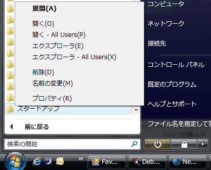
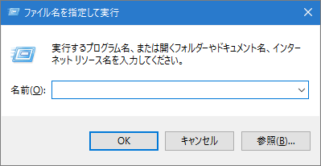

[HME0026A]
●スタートアップフォルダが見つからない

- スタートアップフォルダってなんですか？ いろいろ探したんですが、スタートアップフォルダがどこにあるかさえ、わかりません。

-
「スタートアップフォルダ」はWindowsが起動した時に、自動的に動くプログラムへのショートカットを入れておくフォルダのことです。秀丸エディタでは常駐秀丸を使用するときに、秀丸エディタのショートカットを「スタートアップフォルダ」に作成します。
スタートアップフォルダは次の手順でひらきます。
Windows Vistaの場合
スタートメニューを開き「すべてのプログラム」を選ぶ。
「スタートアップ」を探し、右クリックメニューで「開く」を選択。

スタートアップフォルダが開きます。
Windows 7/8/10 の場合
[Windows] + [R] を押し、「ファイル名を指定して実行」を表示させます。
 「
shell:startup」と入力し、「OK」を押せば、スタートアップフォルダが開きます。